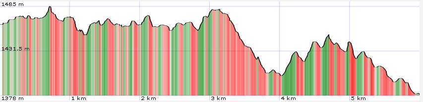
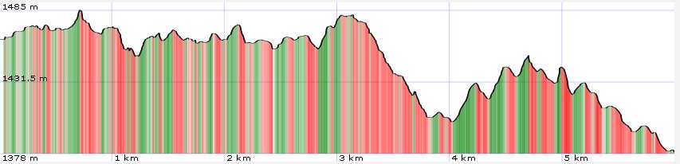

General Information
Map

| data fields | Note |
|---|---|
| number | 016 |
| suitable for |
|
| degree of difficulty |
|
| distance | 6 km |
| hiking time | 1h 30' |
| difference in altitude | 200 mt D+ and 300 mt D- |
| recommended period |
|
| Road surface | path |

